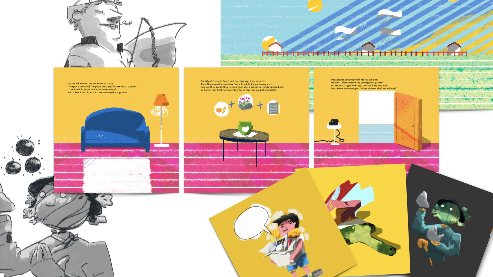
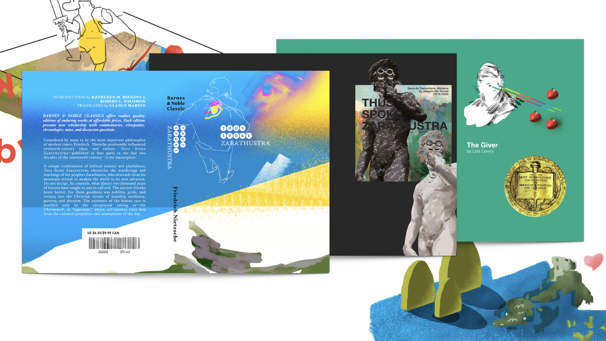
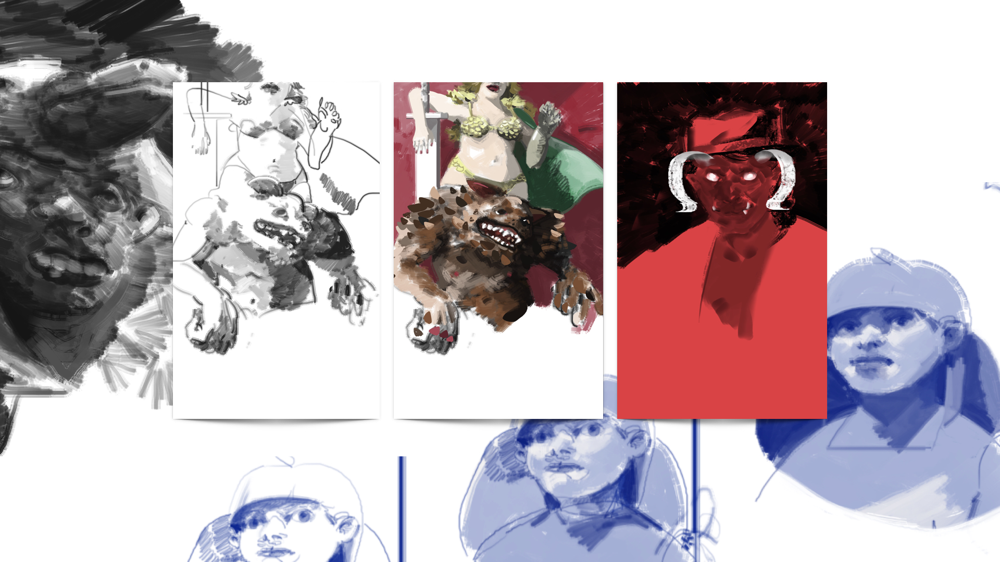
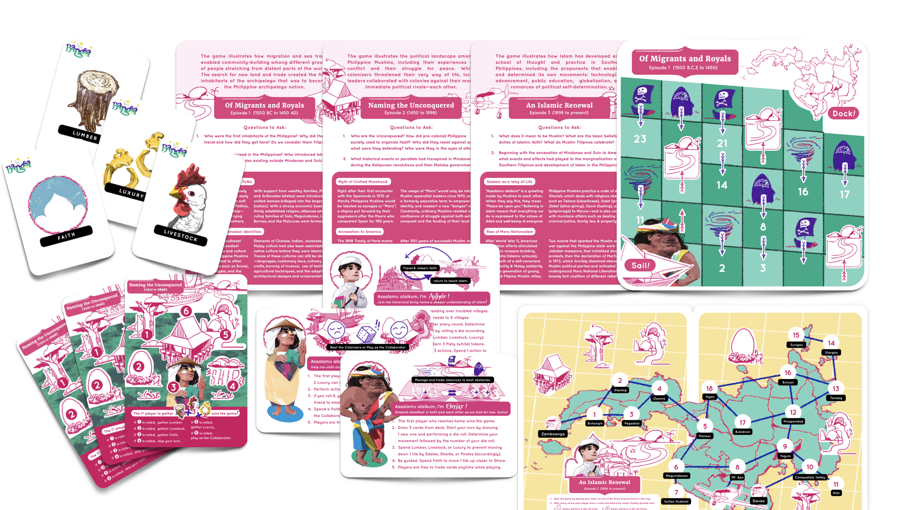
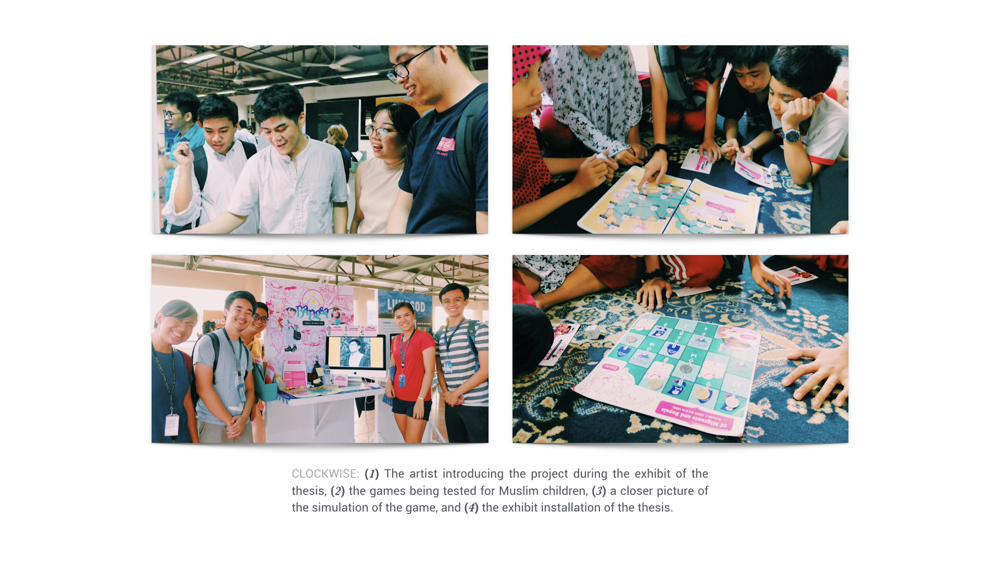
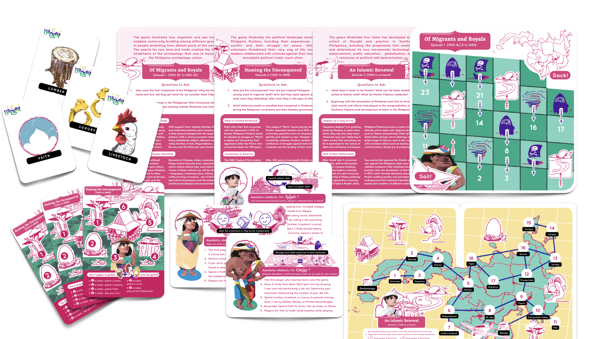
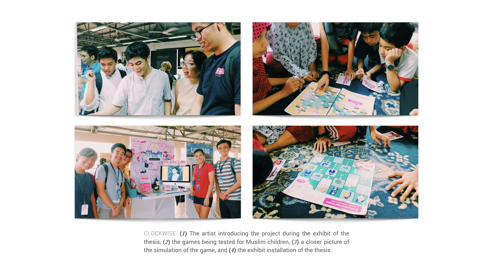
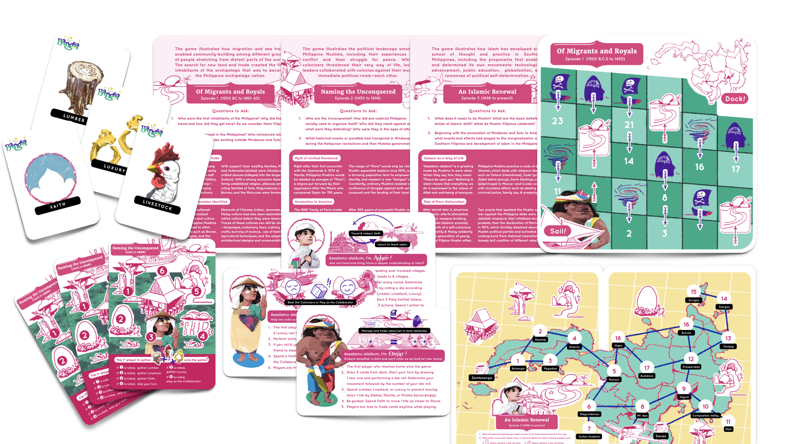
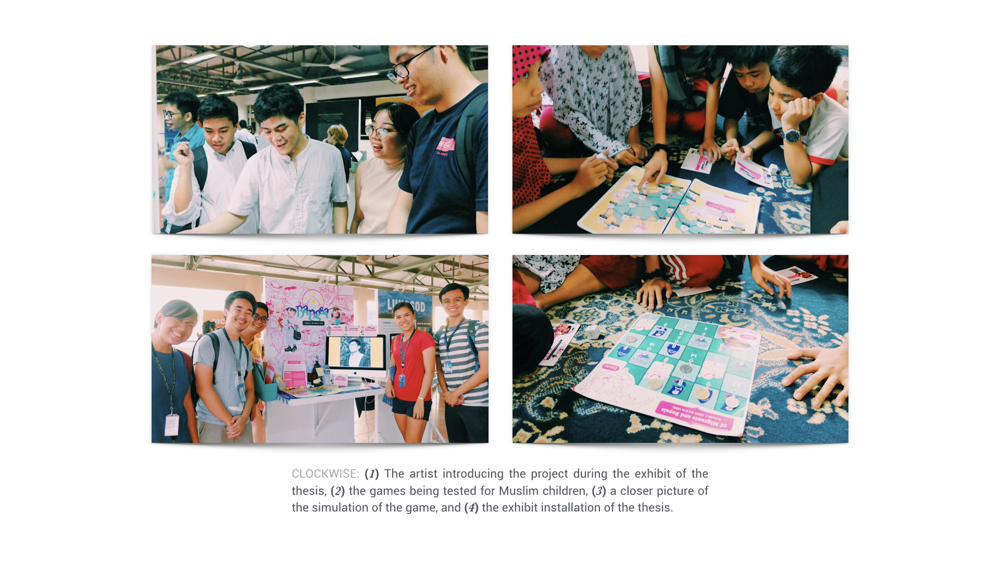

Born in 1994 in San Francisco, California. He recently completed his studies on Fine Arts, Information Design in the Loyola Schools of the Ateneo de Manila University in the Republic of the Philippines.
- 1. Plant Parenthood and
other personal projects
Children Illustrations
- 2. Union of Students for the
Advancement of Democracy
Agitation and Propaganda
- 3. Ateneo Association of
European Studies Students
Layout and Editorial Work
- 4. Bangsa: Nation Builder's Kit
Game Art and Development
- Complete Rèsumè
- twitter.com/theosanti
- linkedin.com/in/theosanti
- be.net/theosanti1994
Website last modified May 21, 2017.





 



Property of photos above shared with Alexa Fontanilla.
Property of photos above shared with Ron Jimenez.

